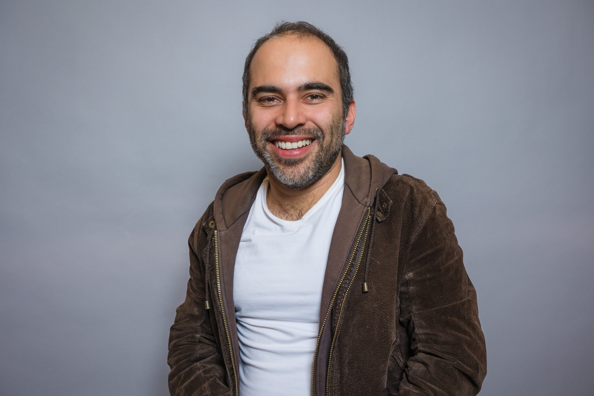

Meet the Team

I work togehter with a group of researchers from diverse backgrounds collaborating to understand the Physics of Aging.
About Myself
- Jeimy A. Capera Mendivelso: Bachelor in Physics from Universidad Distrital Francisco José de Caldas with experience in Python programming and machine learning techniques. Areas of interest include research in cellular biophysics, computational analysis of biological data, and physical modeling applied to living systems.
- Rashmi Mohotti Bachelor in Chemical Engineering and Ph.D. Student in Chemical Engineering at the University of Virginia with a background in chemical and biological systems engineering. Currently studying the mechanical behavior of large synthetic GEMs in cellular environments.
- Andy Duan B.Sc. in Molecular Biochemistry at NYU: Undergraduate researcher interested in organelle dynamics. Currently investigating the physical properties of the endoplasmic reticulum in aging cells.
- Ingrid T. Gaitán B.Sc. in Physics from Universidad Distrital Francisco José de Caldas and Veterinary Medicine Student at UPTC: Multidisciplinary researcher exploring how aging impacts cell fate decisions through physical and biological mechanisms.
- Nestor Perico B.Sc. in Engineering and Physics, M.Sc. in Physics, Ph.D. in Engineering at Universidad de los Andes: Experienced in theoretical modeling and signal processing. Currently applying information theory to quantify aging-related changes in cellular systems.
- Maria del Mar Baracaldo B.Sc. in Bacteriology and Biomedical Engineering at Pontificia Universidad Javeriana : Researcher combining biomedical sciences and engineering to study the physical properties of neurons under stress and aging conditions.
- Juan David Quevedo Bachelor in Physics at Universidad Distrital Francisco José de Caldas interested in gene circuits.
- Alejandra Borrero Undergraduate in Physics at Universidad de los Andes: Physics student with a growing interest in neurophysics. Contributing to research on neuronal mechanics and aging.
- Juan José Cárdenas Undergraduate in Microbiology at Universidad de los Andes: Early-stage researcher exploring the cellular biology of aging through experimental and microscopy-based approaches.
- Luis Carlos Bastidas B.Sc. and M.Sc. in Physics at Universidad de los Andes: Researcher with experience in optical trapping and particle tracking. Currently working on 3D single-particle tracking to quantify intracellular mechanical changes.
- Stephanie Figueroa-Reyes B.Sc. in Biology at Cornell University: Focused on cloning and characterization of ER-targeted GEMs in yeast. Currently an Undergraduate Student Researcher at the Lammerding Lab.
- Noah Jaggernauth B.Sc. in Biochemistry at City University of New York (CUNY): Contributed to studies on yeast aging and biophysical measurements. Currently an undergraduate student at the City University of New York (CUNY).
- Juan Diego Naranjo B.Sc. in Physics at Universidad Distrital Francisco José de Caldas: Studied anomalous diffusion behaviors in aging cells, focusing on cytoplasmic heterogeneity.
- Steven Rozo B.Sc. in Physics from Universidad Distrital Francisco José de Caldas and Bachelor in Electrical Engineering at Universidad Nacional de Colombia : Developed and implemented microfluidic systems for aging studies. Currently an Electrical Engineering student at Universidad Nacional de Colombia.
- Ivonne Rojas B.Sc. in Physics from Universidad Distrital Francisco José de Caldas, M.Sc. in Complex Systems from Universitat de les Illes Balears Mallorca): Modeled yeast aging using computational simulations of cellular distributions. Currently a Ph.D. student at the University of Bologna.
- Diana Forero B.Sc. in Physics from Universidad Distrital Francisco José de Caldas: Worked on survival estimation in yeast aging populations. Currently a Physics Instructor.
- Rubén L. Acevedo B.Sc. in Physics from Universidad de los Andes and Specialist in University Teaching: Focused on pressure modeling in confined yeast environments. Currently a Physics Instructor at MBS.
- Ivon Acosta B.Sc. in Physics from Universidad Distrital Francisco José de Caldas: Developed multiphysics simulations of microfluidic devices using COMSOL. Currently a Physics Instructor at GCBS Bogotá.
David C. Durán-Chaparro, Ph.D. I am a postdoc at Liam Holt Lab at NYU. I am from Bucaramanga, Colombia. Since my school years I have found a great fascination for Engineering, Physics and Biology. Trying to combine these interests I studied Mechanical Engineering at the Universidad de los Andes in Bogotá, Colombia while taking several courses in Biology and Physics. Then, during a time abroad at the University of Tübingen in Germany I discovered my passion for Biophysics and micro- and Nanosystems. During my undergraduate years, I delved into simulations of fluid dynamics, sparking my interest in microfluidics. Later, during my graduate studies I had the opportunity of deepening my interest in microfluidics and Systems Biology by working at the Harvard Center for Nanoscale Systems and Dr. Johan Paulsons lab at Harvard Medical School. During this time I started working with Dr. Juan Pedraza and pursued a Ph.D. in Physics where I developed a novel microfluidic device for studying aging in yeast cells. The main innovation of this device was the low pressure trapping of yeast by means of the slipstreaming effect (very popular in Formula 1, Cycling and Running). By investigating how pressure affected growth and aging of cells I found the work of the Holt Lab. After coming to the Holt Lab I started researching how macromolecular crowding changes during aging in yeast cells. In my free time, I enjoy spending time with my wife Karen and two kids Maria and Matias and training for triathlons.
-

Mentees
Role: Undergraduate Research Intern (Physics, Universidad Distrital)
Project: Cloning and characterization of ER-targeted GEMs in yeast.
Outcome: Contributed to imaging pipeline development; currently pursuing graduate studies.

Role: Ph.D. Student, Chemical Engineering (University of Virginia)
Project: Mechanical behavior of large synthetic GEMs in cells.
Outcome: Ongoing collaboration on GEM calibration models in mammalian systems.
Role: Undergraduate Researcher (Molecular Biochemistry, NYU)
Project: Investigating the biophysical properties of the endoplasmic reticulum in aging yeast cells.
Outcome: Co-developed image analysis workflow; exploring graduate programs.
Role: Physics graduate and Veterinary Medicine student
Project: Studying how physical and biological mechanisms influence cell fate in aging.
Outcome: Integrated multidisciplinary approach to age-related cell decisions.
Mentees